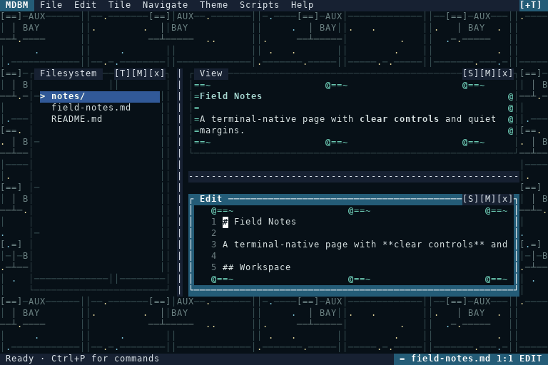
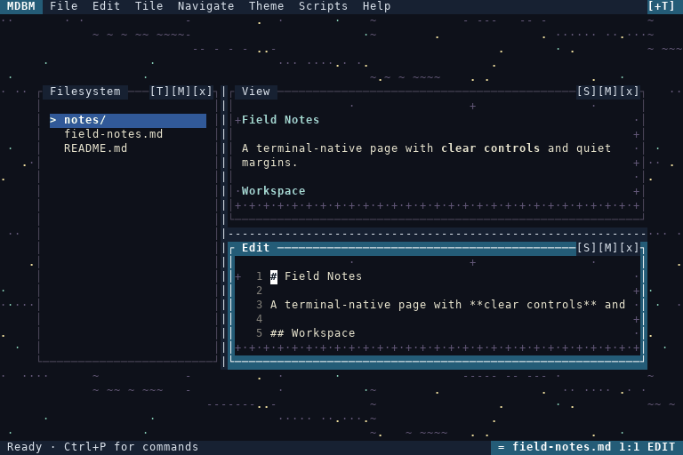
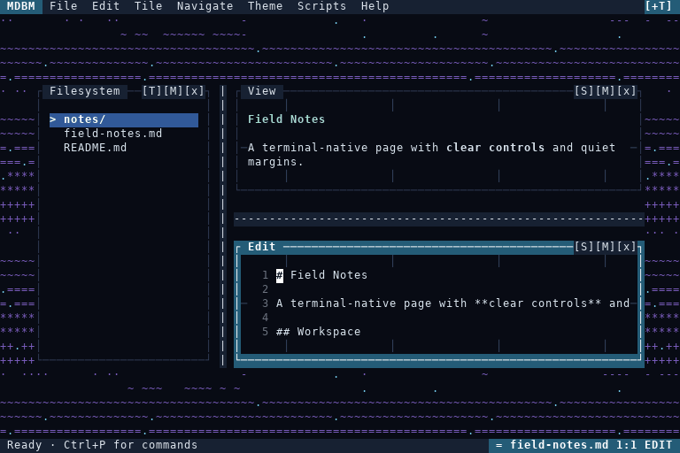

These GIFs are generated from the actual MDBM cell compositor. Motion is theme data only; host controls, cursor, selection and dialogs remain protected. Each capture runs at 8 documentation frames per second, with a host cue injected halfway through.



Generated by tests/render_animation_gallery.py. Terminal font metrics and colour quantization can differ from these documentation captures.